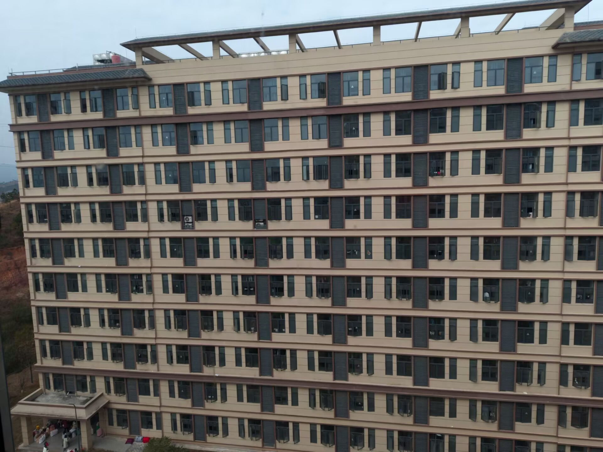
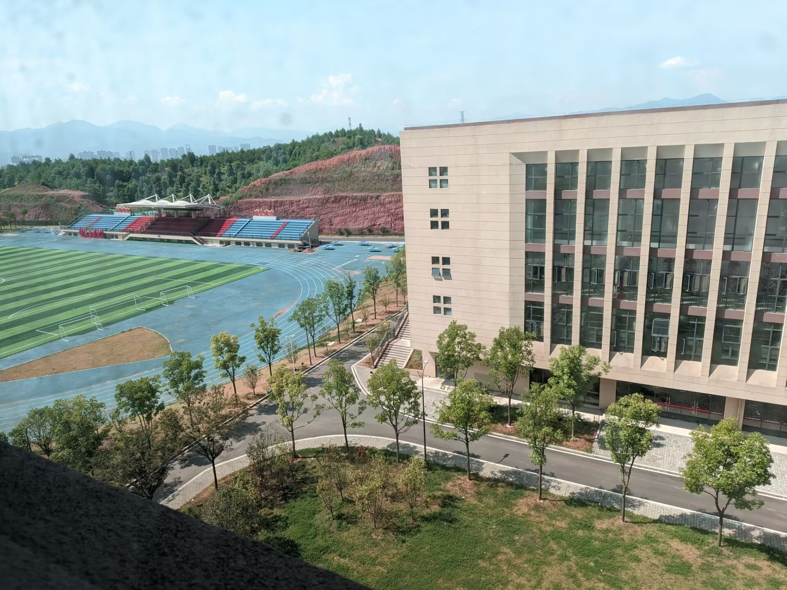
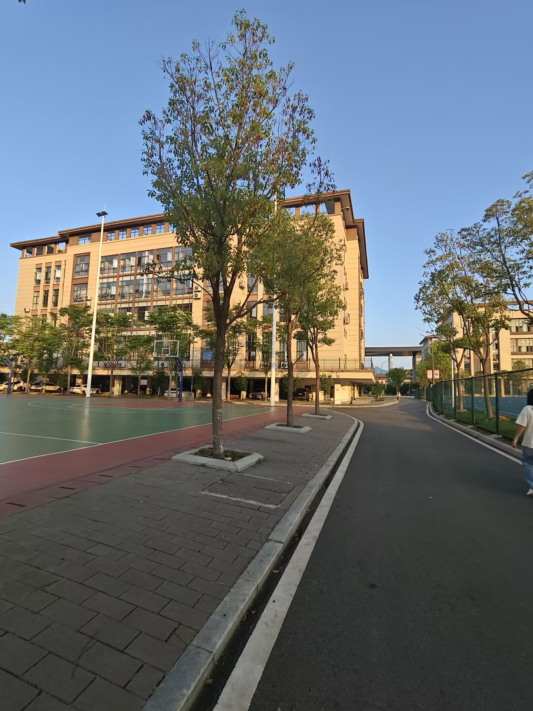
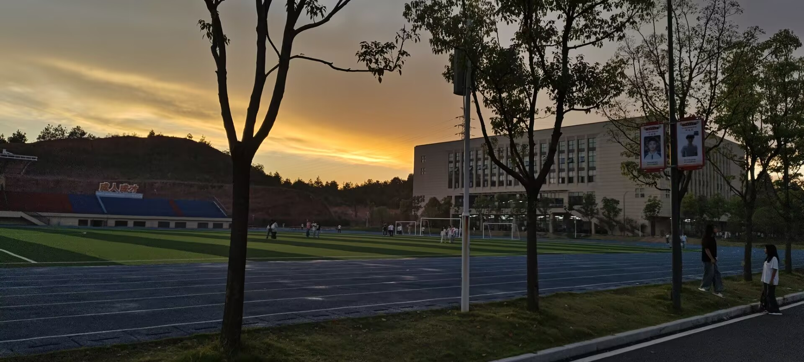

从 1958 年一路走来 · 一脉相承的技能育人之路
遂川高级技工学校坐落于江西省吉安市遂川县高铁新区职校路 6 号，地处高铁站东侧，是一所由遂川县人民政府主办、遂川县教育体育局主管的现代化全日制公办学校。
学校办学历史可追溯至 1958 年创办的江西共大遂川分校；1985 年更名为遂川县职业中学；2022 年恢复独立办学；2023 年 9 月，高铁新区新校区正式启用，同年 11 月更名为遂川县职业学校；2024 年 2 月，经江西省人力资源和社会保障厅批复，正式设立遂川高级技工学校，成为全县唯一一所"职业教育+高级技工教育"现代化全日制公办学校。
校园总占地面积 230 亩，总投资 9.96 亿元，建筑面积超 12 万平方米。建有综合楼、教学楼、实训楼、图书馆、师生宿舍、食堂等 14 栋现代化楼宇，以及 400 米标准运动场、篮球场与市政园林配套设施，实训设备总值超 6000 万元，建有智能制造、电子技术、茶叶生产与加工等实训中心，是一座"公园式"现代化校园。
学校坚持"技能成才、就业无忧、升学有路"的办学理念，专业设置紧密对接市、县电子信息、智能制造、茶叶、文旅等产业体系，与奥海科技、志博信科技、狗牯脑茶叶集团等企业深度合作，推行"订单班""厂中校""校中厂"培养模式，招生即招工、入校即入企，为学子铺就技能成才的快车道。
公办性质 · 省厅批复 · 联合办学
学校由遂川县人民政府主办，遂川县教育体育局主管，现代化全日制公办学校，办学规范、收费透明、质量可靠。
2024 年 2 月经江西省人力资源和社会保障厅批复设立，是全县唯一"职业教育+高级技工教育"现代化全日制公办学校。
与遂川县职业学校联合办学，贯通中职教育与高级技工教育，拓宽升学渠道，就业有能力、升学有通道。
校址位于遂川县高铁新区职校路 6 号（高铁站东侧），高铁新区板块，交通便捷，区位优势明显。
14 栋现代化楼宇 · 400 米标准运动场 · 市政园林配套




校园按现代化标准规划建设，功能分区科学、学习生活两相宜。实训设备总值超 6000 万元，覆盖智能制造、电子技术、茶叶生产与加工等主要专业方向。
从 1958 年至今 · 一脉相承的技能育人之路
全县唯一"职业教育+高级技工教育"现代化全日制公办学校
校址：江西省吉安市遂川县高铁新区职校路 6 号（高铁站东侧） · 工作日 8:30-11:30 / 14:30-17:30